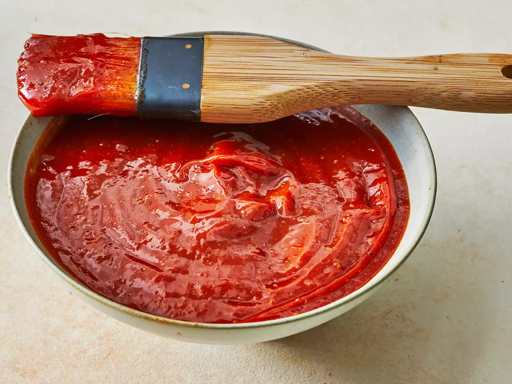

This recipe has a lot of sweetness and spice, so if you're looking for a classic homemade BBQ sauce that's easy to make, look no further.
It is very popular with users of 'ceramic' type smokers and grills, (i.e. Primo, Kamado, Big Green Egg, etc.)
